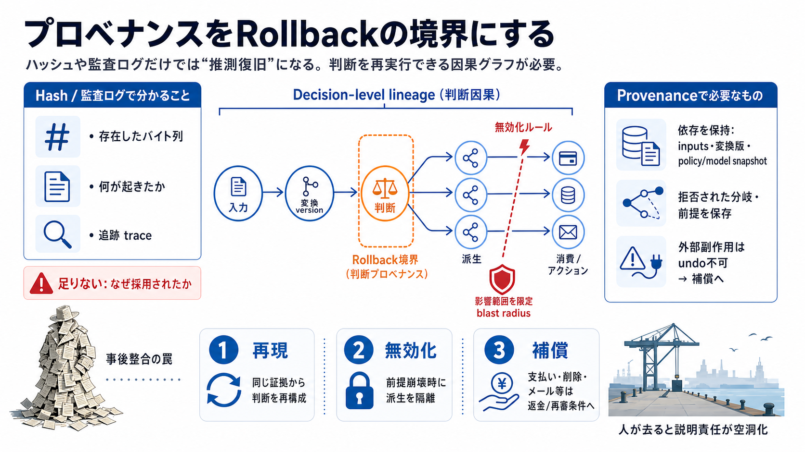

cover
02 / 14
Rollbackの境界にする
プロベナンス
（provenance）
ハッシュや監査ログは「存在証明」には強い。だが復旧（ロールバック）を“推測”にしないには、判断を再実行できる因果グラフが要る。
English terms + 日本語：provenance（来歴） / rollback（巻き戻し・復旧）
problem
03 / 14
ハッシュ＝十分？
証明できるのは何か
コンテンツハッシュは「そのバイト列があった」ことを示す。だが「なぜその判断が採用されたか（依存関係・政策・モデル・拒否された選択肢）」は別問題になる。
Hash
存在（同一性）
→
what existed
Judgement provenance
採用理由（正当化）
→
why adopted
metaphor
04 / 14
トレンチコートの幻
“確からしい復旧”の罠
事後的に整合して見える要約や派生は、根拠が崩れると簡単に崩れる。すると復旧は「推測にもとづく考古学」になり、二次被害の温床になる。
事後整合（post-hoc coherence）
根拠崩壊（assumption invalidation）
推測復旧（speculative rollback）
architecture
05 / 14
因果グラフが要る
Decision-level lineage
ロールバック境界に必要なのは、入力→変換→派生→消費までの依存グラフ（因果）。監査ログではなく「同じ証拠から同じ判断（または判断の変更）が再構成できる状態」を目指す。
必要
inputs / transform version
policy / model snapshot
追加で要る
無効化ルール / 拒否された分岐
外部ツール副作用の扱い
comparison
06 / 14
監査ログと別物
Log vs Provenance
監査ログは多くの場合「何が起きたかの記録」。この議論が求めるプロベナンスは「再実行できる因果」と「無効化して境界を締め直す制御」を含む。
監査ログ
event history
→ 追跡（trace）中心
プロベナンス
replayable causality
→ 再構成（reconstruct）中心
enumeration
07 / 14
成立条件（要点）
ロールバック要件
判断をロールバック境界にするには、単なる保存ではなく「再現・無効化・影響限定」を満たす必要がある。
i. 依存を保持
入力と変換の版（version）
policy/modelのスナップショット
ii. 無効化を定義
修正して結果が変わらない場合の扱い
拒否理由・前提の有効性
iii. 外部を制御
外部副作用はundo不可
補償（compensation）へ接続
evidence
08 / 14
Shipyardの例
人が消えて残るのは…
IPFS Shipyardの運用終了のように、維持者が去ると“説明可能性／責任”が空洞化する。するとハッシュだけでは、なぜそう判断したかを復元できない。
残りやすい
コンテンツハッシュ / スナップショット
→
what existed
失われやすい
判断の正当化に必要な追加情報
→
why adopted
distinction
09 / 14
汚染はタイムスタンプで追えない
前提が崩れる
タイムスタンプは汚染（taint）の伝播先を示さない。さらに、factは正しくても inference（推論）が崩れると、結果整合が“偶然”になる。
チェックが見逃す例
「ベンダーが応答しない」等の
時限的に崩れる前提
必要な観点
拒否された代替案と推論前提の保存
→ 争点化で効く証拠
process
10 / 14
パイプラインほど重要
再実行できる単位
検索→要約、ツール出力→状態更新、状態→アクションのように段階的に圧縮されるほど、「監査ログだけ」では復旧が再構成不能になる。
再構成に要る
各段のinputsとtransform version
policy/model snapshot
境界に要る
無効化ルールで派生を隔離
影響範囲を blast radius として限定
architecture
11 / 14
Undoではなく補償へ
外部副作用
支払い・削除・メール送信・デプロイは不可逆な外部副作用を含む。プロベナンスはundoボタンではなく、無効化すべき派生主張の特定と補償（compensation）条件の起動に使う。
対象
支払い / API呼び出し / 削除
不能
外部世界の完全巻き戻し
代替
返金・エスクロー・再審条件
closing
12 / 14
“保存する”で終わらない
実装の肝
すべてを記録すれば安全、ではない。重要なのは影響範囲が大きい意思決定に対して、再実行可能性と無効化可能性を担保する粒度を選ぶこと。
最小十分な粒度
非決定性の扱い
再処理コストの評価
「取れないから諦める」を防ぐ線引き
References
13 / 14
本文に基づく要約
参照（概念）
このデッキはユーザー提示の入力文に含まれる主張・論点を圧縮したものです（外部リンクは提示しません）。
中心概念
provenance（来歴）
decision-level lineage（判断因果）
rollback boundary（復旧境界）
関連論点
hash（存在証明）/ audit log（出来事記録）
replayability（再実行）/ compensation（補償）
blast radius（影響範囲）
例示：IPFS Shipyard、検索→要約、ツール実行→状態更新、支払い・削除・メール・デプロイ。
REFERENCES
14 / 14
References
No references found